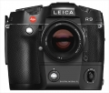

世界上第一个用于35mm照相机的可更换数码后背，通过机身现有的电子触点进行通讯和数据交换，Leica R8/R9不用做任何修改就可以直接使用；Leica R8/R9将成为世界上第一套可以同时使用数码和胶片的35mm照相机。采用Kodak ISS研制的1000万像素的CCD感光器件，有效感面积为26.4 x 17.6mm，像素直径为6.8μm，感光度为ISO 100-800；因此使用原有镜头的转换系数是1.37X。整个Digital-Modul-R系统由数码后背和电源供应两部分组成。
徕卡 Digital Modul-R是为一的135画幅可拆卸式数码相机后背，供徕卡R8和R9使用。我有一台R9配着Digital Modul-R，我觉的Digital Modul-R数码背很有特色。
1.可拆卸式后背。 2.有特点。 3.操作简便。 4.有徕卡的感觉。
1.沉重 2.价格较高 3.不是全画幅
胶片味道、LEICA味道
用她拍摄，信心十足，效果另人惊喜，画质优良，不必再用PS了。
沉重